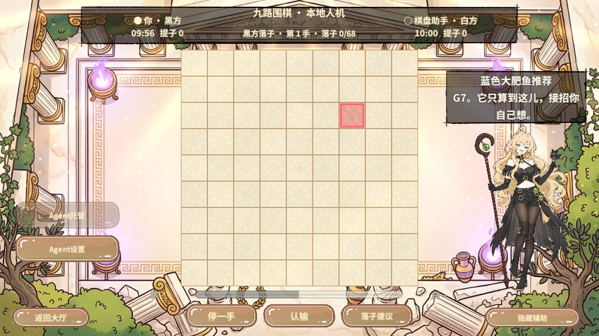
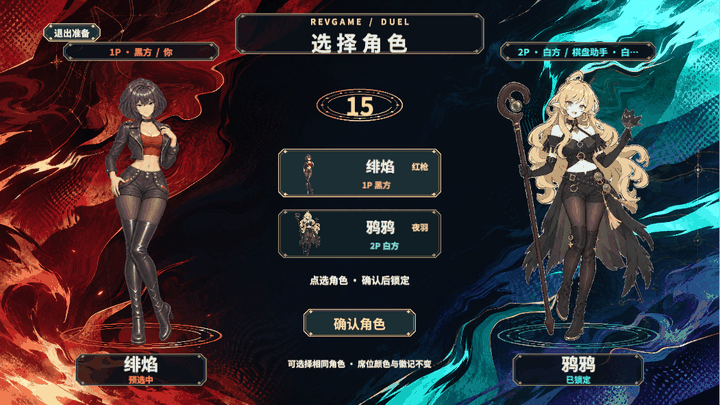
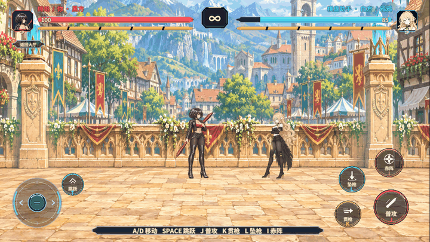
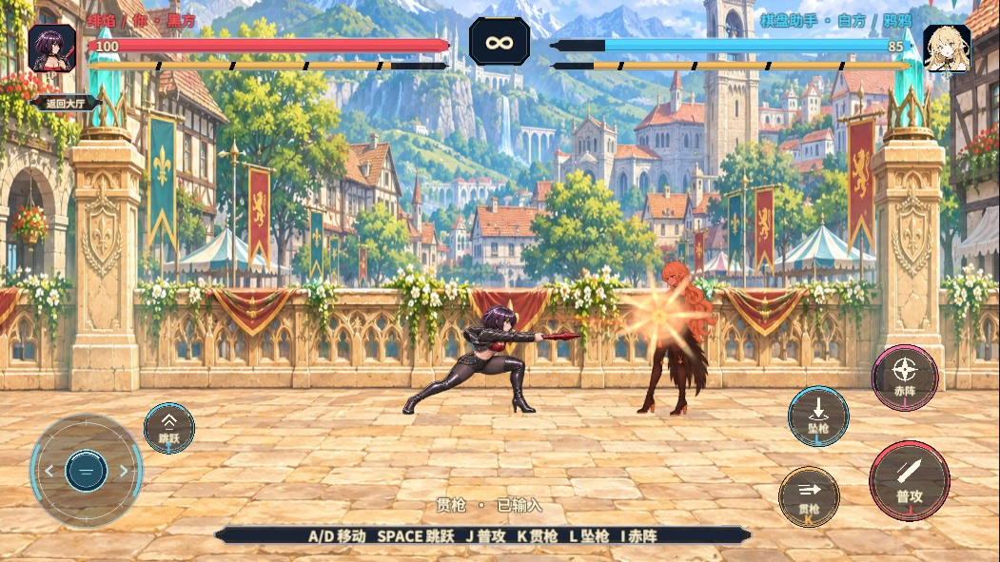
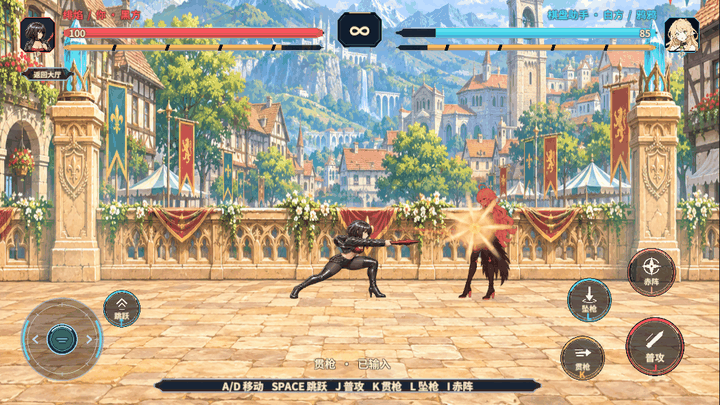

鸦鸦长提示

选角原图与擂台背景


贯枪命中


- 规则与边界
- 三段普攻空挥无扣血。持续压住左边界时结界只触发一次，权威坐标为 -4500。
- 序列与声音
- 渲染断言核对命中序列至少前三帧进入播放，技能级音效已提交给声源。两名角色共 90 张透明帧，图集实包 188 张切片、3 页。音效来源
- 运镜与收尾
- 从开战到贯枪命中，缩放不变，舞台 Z 为 0。两个验收流程均回到 StartScene，准备面板关闭，运行时 Error 数为 0。
资源与验证范围
PC 与 Android 各 86 个 AB。平台主清单、逐包及各自清单的发布文件与实际构建产物逐字节一致。PC 构建工单曾记录 Unity 编辑器内部资源重载错误，产物仍完成发布，随后由 Windows Editor 冷启动实测。Android 通过构建与产物校验。
编辑态完整重编译工单 6cc2c036600b463e8f98b29d3b082566 已完成，零编译错误。音效断言覆盖播放调用与文件峰值，真人听感、Android 真机画面及帧率仍待验证。
RevUI 装配气泡、选角和战斗 HUD，RevScene 按正式门禁交接，RevPool 复用有限的轨迹和冲击环。序列节奏、混音与背景流场由项目资产控制。